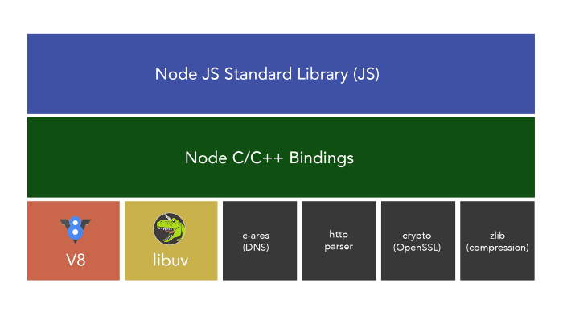

原文地址：Handling IO — NodeJS Event Loop Part 4, Deepal Jayasekara, Nov 26, 2017
本篇文章中，我将详细讨论 NodeJS 如何处理 I/O，深入探讨事件循环的实现以及 I/O 如何与其他异步操作组合在一起。
异步 I/O
NodeJS 中我们反复谈到异步 I/O。正如本系列第一篇文章提到的，I/O 并不注定是同步的。
所有操作系统实现中，它们都提供异步 I/O 的事件通知接口（linux epoll, macOS kqueue，solaris event ports，windows IOCP 等）。NodeJS 利用这些系统级别的事件通知系统来提供非阻塞、异步 I/O。
如下图所见，NodeJS 是一系列工具的集合，它们聚合成高性能的 NodeJS 运行时。这些工具包括：
- Chrome v8 引擎 —— 高效执行 JavaScript
- Libuv —— 异步 I/O 事件循环
- c-ares —— DNS 操作
- 其他插件如 http-parser，crypto 和 zlib

这篇文章中我会讲解 Libuv 和它如何向 Node 提供异步 I/O。让我们再回顾事件循环图示。

我们已经学到的事件循环知识有：
- 事件循环从处理所有过时的定时器开始
- 接着处理所有挂起的 I/O 操作，可能会等待挂起的 I/O 变为完成
- 然后处理 setImmediate 回调
- 最后处理 I/O close 的处理器
上述每个阶段间，libuv 会把阶段的执行结果通知 Node 架构的更上层部分，也就是 JavaScript。每次通知发生时，process.nextTick 回调和其他微任务回调就会被执行。
现在，让我们理解 NodeJS 在事件循环中如何处理 I/O。
什么是 I/O？
一般地，涉及到除 CPU 以外的外部设备的工作都可被称为 I/O。最常见的抽象 I/O 类型有文件操作和 TCP/UDP 网络操作。
Libuv 和 NodeJS I/O
JavaScript 本身没有能力实现异步 I/O 操作。NodeJS 开发过程中，libuv 最初是为了给 Node 提供异步 I/O。libuv 现在已经是一个独立的库，可独立被使用。Libuv 在 NodeJS 架构中的角色是抽象和屏蔽内部 I/O 复杂度，给上层的 Node 提供通用的接口，让 Node 具有跨平台的异步 I/O 能力。
如 NodeJS 架构图所示，libuv 在架构中处于较底层的位置。现在，让我们看看 NodeJS 上层和 libuv 事件循环各阶段之间的关系。

相比于事件循环中存在 4 个可区分的阶段，在 libuv 中其实存在 7 个可区分的阶段：
- Timers —— 执行过期的
setTimeout和setInterval回调 - Pending I/O callbacks —— 执行挂起的已完成或发生错误 I/O 回调
- Idle handlers —— libuv 内部事务处理
- Prepare Handlers —— poll I/O 前的准备工作
- I/O Poll —— 可能等待任意的 I/O 变为完成
- Check handlers —— poll I/O 后的事后工作，一般是
setImmediate回调 - Close handlers —— 所有关闭 I/O 的处理器
如果你还记得第一篇文章，你可能会疑惑：
- Check handlers 是什么？它在事件循环图中不存在。
- I/O Polling 是什么？为什么要在执行已完成 I/O 回调后阻塞 I/O？Node 难道不是非阻塞的吗？
让我们来解释这两个问题。
Check Handlers
NodeJS 初始化时，它会把所有 setImmediate 回调注册为 libuv 的 Check handlers。这意味着你使用 setImmediate 传入的回调会增加在 Libuv 的 Check handlers 队列中。它保证了这些回调会在事件循环中的 I/O 操作后被执行。
I/O Polling
现在你应该在猜测 I/O Polling 是什么。虽然我把 I/O 回调队列和 I/O Polling 合并为事件循环中的单一阶段，但实际上 I/O Polling 发生在处理完已完成 / 已错误的 I/O 回调。
关于 I/O Polling 最重要的事实是它是可选的。I/O Polling 是否发生取决于当时的具体情况。为了彻底地了解它，我们看看 libuv 中的实现代码。
r = uv__loop_alive(loop);
if (!r)
uv__update_time(loop);
while (r != 0 && loop->stop_flag == 0) {
uv__update_time(loop);
uv__run_timers(loop);
ran_pending = uv__run_pending(loop);
uv__run_idle(loop);
uv__run_prepare(loop);
timeout = 0;
if ((mode == UV_RUN_ONCE && !ran_pending) || mode == UV_RUN_DEFAULT)
timeout = uv_backend_timeout(loop);
uv__io_poll(loop, timeout);
uv__run_check(loop);
uv__run_closing_handles(loop);
if (mode == UV_RUN_ONCE) {
uv__update_time(loop);
uv__run_timers(loop);
}
r = uv__loop_alive(loop);
if (mode == UV_RUN_ONCE || mode == UV_RUN_NOWAIT)
break;
}对不熟悉 C 的人这段代码可能会人头痛。让我们尝试找到它的精髓而不过分关注细节。它来自于 libuv 源码的 core.c 文件的 uv_run 方法。但最重要的是，它是 NodeJS 事件循环的核心。
让我们再看看事件循环图，它与代码可以对应起来。让我们一行行来解释代码：
uv__loop_alive—— 检查是否有待调用的被引用的处理器，或是否有活跃的挂起操作uv__update_time—— 发起系统调用获得当前时间，更新循环的时间（用于判断过期的计时器）uv__run_timers—— 运行所有过期的计时器uv__run_pending—— 运行所有已完成 / 已错误的 I/O 回调uv__io_poll—— Poll for I/Ouv__run_check—— 运行所有 check handlers（setImmediate回调在此）uv__run_closing_handles—— 运行所有关闭处理器
首先，事件循环通过调用 uv__loop_alive 函数检查事件循环是否依然存活。
static int uv__loop_alive(const uv_loop_t* loop) {
return uv__has_active_handles(loop) ||
uv__has_active_reqs(loop) ||
loop->closing_handles != NULL;
}uv__loop_alive 函数返回 boolean 值。当满足以下条件时返回 true：
- 存在待调用的活跃处理器
- 存在挂起的活跃请求或操作
- 存在待调用的关闭中的处理器
只要 uv__loop_alive 返回 true，事件循环就会一直循环运行。
运行完所有过期定时器的回调后，uv__run_pending 会被调用。它会处理 libuv 储存所有已完成 I/O 操作的 pending_queue。如果 pending_queue 为空，uv__run_pending 返回 0，否则执行队列中所有回调并返回 1。
static int uv__run_pending(uv_loop_t* loop) {
QUEUE* q;
QUEUE pq;
uv__io_t* w;
if (QUEUE_EMPTY(&loop->pending_queue))
return 0;
QUEUE_MOVE(&loop->pending_queue, &pq);
while (!QUEUE_EMPTY(&pq)) {
q = QUEUE_HEAD(&pq);
QUEUE_REMOVE(q);
QUEUE_INIT(q);
w = QUEUE_DATA(q, uv__io_t, pending_queue);
w->cb(loop, w, POLLOUT);
}
return 1;
}现在让我们看看 libuv uv__io_poll 函数实现的 I/O Polling。
uv__io_poll 第二个参数是 uv_backend_timeout 计算出的超时时间。uv__io_poll 利用这一参数决定应该阻塞 I/O 多长。如果超时时间为 0，I/O polling 会被跳过，事件循环移动到 check handlers（setImmediate）阶段。什么决定 timeout 的值是很有趣的部分。根据之前 uv_run 的代码，我们可以推导出以下流程：
- 如果事件循环以
UV_RUN_DEFAULT模式运行，timeout根据uv_backend_timeout方法计算得出 - 如果事件循环以
UV_RUN_ONCE模式运行，并且uv_run_pending返回 0（例如pending_queue为空的情况），timeout根据uv_backend_timeout方法计算得出 - 以上两种都不是则
timeout为0
不需要太过关注事件循环的不同模式比如
UV_RUN_DEFAULT和UV_RUN_ONCE，如果你真的有兴趣，看这里
让我们看看 uv_backend_timeout 代码，理解 timeout 是如何计算得出的。
int uv_backend_timeout(const uv_loop_t* loop) {
if (loop->stop_flag != 0)
return 0;
if (!uv__has_active_handles(loop) && !uv__has_active_reqs(loop))
return 0;
if (!QUEUE_EMPTY(&loop->idle_handles))
return 0;
if (!QUEUE_EMPTY(&loop->pending_queue))
return 0;
if (loop->closing_handles)
return 0;
return uv__next_timeout(loop);
}- 如果
stop_flag被设置，意味着事件循环将要退出，超时时间为0。 - 如果没有活跃的 handles 和活跃的挂起状态的操作，不需要等待，因此超时时间为
0。 - 如果有待执行的挂起状态的空闲 handles，不等待 I/0，因此超时时间为
0。 - 如果
pending_queue中有已完成的 I/O handlers，也不应该等待 I/O，因此超时时间为0。 - 如果存在挂起待执行的 close handlers，也不应该等待 I/O，因此超时时间为
0。
如果以上条件都不满足，uv__next_timeout 被调用来决定 libuv 应该为 I/O 等待多长。
int uv__next_timeout(const uv_loop_t* loop) {
const struct heap_node* heap_node;
const uv_timer_t* handle;
uint64_t diff;
heap_node = heap_min((const struct heap*) &loop->timer_heap);
if (heap_node == NULL)
return -1; /* block indefinitely */
handle = container_of(heap_node, uv_timer_t, heap_node);
if (handle->timeout <= loop->time)
return 0;
diff = handle->timeout - loop->time;
if (diff > INT_MAX)
diff = INT_MAX;
return diff;
}uv__next_timeout 负责返回离当前最近的定时器的值。如果没有，返回 -1，也就意味这无限。
现在你应该对问题 “为什么要在执行已完成 I/O 回调后阻塞 I/O？Node 难道不是非阻塞的吗？” 有答案了。
事件循环在存在待执行的挂起任务时不会阻塞，但如果不存在，循环就会一直阻塞直到有过期的定时器重新激活循环。
现在我们知道循环会等待多久 I/O 变为已完成。timeout 被传入 uv__io_poll，uv__io_poll 一直等待进来的 I/O 操作，直到达到超时时间或系统设置的最大安全超时时间。超时后，循环会激活，移动到 check handlers 阶段。
I/O Polling 在不同的操作系统有不同的实现。Linux 中使用系统内核调用方法 epoll_wait，macOS 使用 kqueue，Windows 使用 IOCP (Input Output Completion Port) 中的 GetQueuedCompletionStatus。我不会具体探讨 I/O Polling 如何工作，因为这个话题很复杂，至少要另外一个系列才能解释清楚（我不认为我会写）。
关于线程池
这篇文章还没有谈到线程池。正如我们在本系统第一篇文章中提到的，线程池主要用来处理所有的文件 I/O 操作，DNS 操作中的 getaddrinfo 和 getnameinfo 调用，因为不同操作系统文件 I/O 的复杂性（对这个问题复杂度的确切分析看这里）。因为线程池的大小是有限的（默认为 4），多个对文件系统的操作请求还是可能会被阻塞直到至少一个线程空闲可用。为了增加服务应用的性能，可通过环境变量 UV_THREADPOOL_SIZE 可将线程池的大小最大设为 128（截止这篇文章的时间）
但是线程池固定大小的限制仍然是 NodeJS 应用的一大瓶颈，因为线程池不仅仅只负责文件 I/O，getaddrinfo 和 getnameinfo。一些特定 CPU 密集计算型的操作如加解密操作如 randomBytes, randomFill 和 pbkdf2 为了避免对应用的性能造成损害，也会在 libuv 线程池中运行。但这也可能导致线程成为 I/O 操作所需的稀缺资源。
上一版 libuv 增强提案中有一点就是建议让线程池的大小可根据负载进行伸缩扩展。但是这项提案最终被撤回，取而代之的是未来会引入的一个关于线程的插件式 API；
本篇文章的一些内容受 Saúl Ibarra Corretgé 2016 年在 NodeConfEU 的演讲启发。如果你想更多了解 libuv，我强烈建议你观看这一演讲视频。